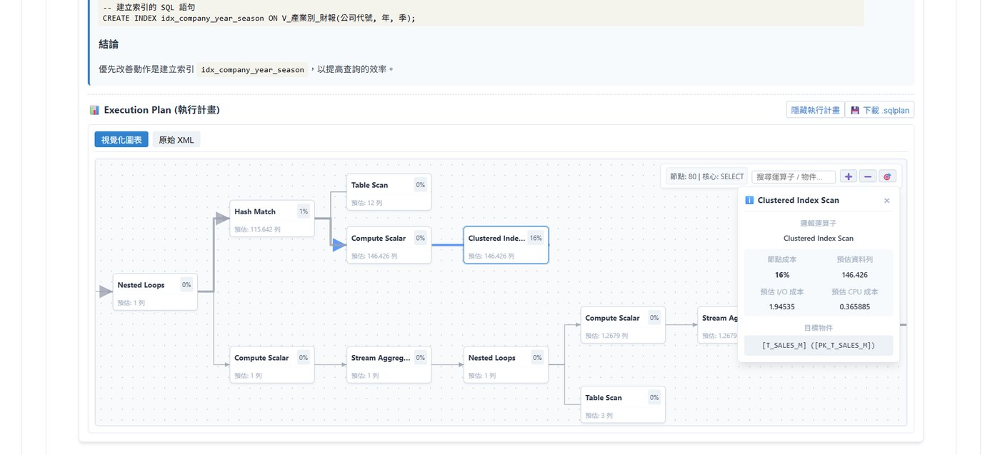
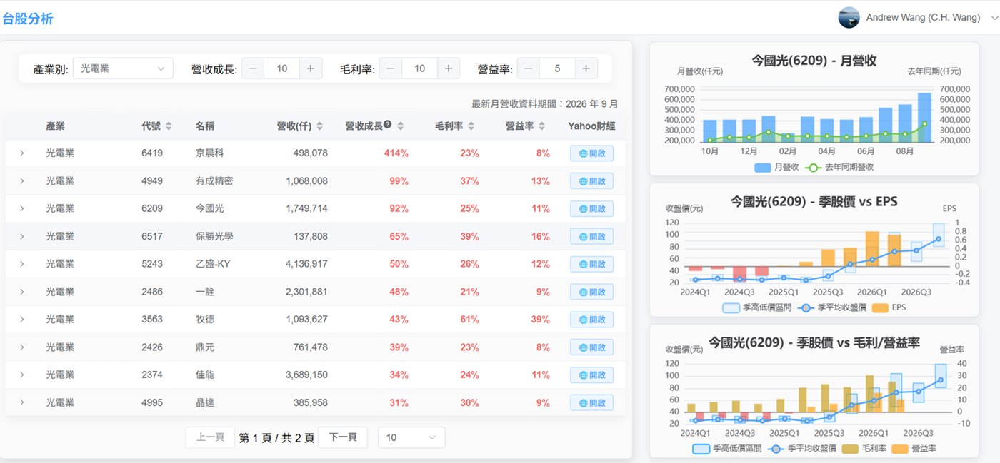
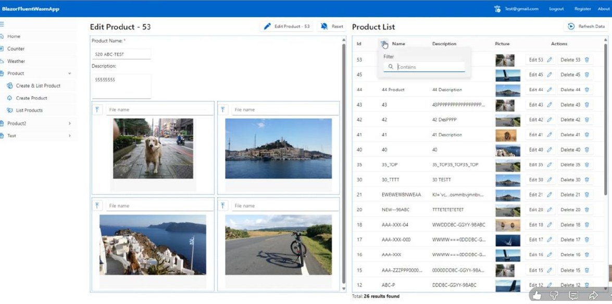

DB Agent：慢查詢的 AI 診斷
即時監控 SQL Server 的效能。慢查詢出現時，把語句與執行計畫交給本地部署的 LLM，產出瓶頸分析與索引建議，並在儀表板上用圖形呈現執行計畫。模型跑在自己的機器上，資料不必送出公司。
- 技術
- Vue 3、.NET 8、SignalR、Channels、SQL Server、Ollama
- 性質
- 個人專案（概念驗證）
以下都是我自己設計並實作的專案，每一項都能實際操作或觀看示範。

即時監控 SQL Server 的效能。慢查詢出現時，把語句與執行計畫交給本地部署的 LLM，產出瓶頸分析與索引建議，並在儀表板上用圖形呈現執行計畫。模型跑在自己的機器上，資料不必送出公司。


依產業別、營收成長率、毛利率與營業利益率篩選台股，並用圖表對照月營收、季股價與 EPS。同一個題目，我用 Next.js 與 Vue 各做了一版，資料放在 Supabase，部署在 Vercel。



主力在 .NET 與資料，近一兩年把 AI 應用接進來。
從資料倉儲、ERP 整合到 AI 應用，一路都在把系統接起來。
企業內部系統的新功能開發與維運，採 ASP.NET Core MVC 搭配 Controller API（BFF 架構），資料庫為 Oracle 與 SQL Server；並做了 AI 對帳自動化的概念驗證。
調校電商後端的資料庫索引、撰寫 PostgreSQL 預存程序；另以 Ollama 與 Discord Bot 建立 RAG 知識庫。
金融業 Web 系統開發，使用 ASP.NET WebForm、SQL Server 預存程序與 Crystal Report。
完成 Blazor WASM 與 Web API 的完整範例，包含 JWT 驗證、圖片上傳與 EF Core 存取資料庫。
帶領台灣與越南的跨國 IT 團隊。建置商業智慧網站，整合兩地工單、越南進銷存與兩套 ERP 的資料，讓管理層看到完整的生產與銷售數據；另完成外銷電商網站、模具與模治具管理、設計工程變更（ECR／ECN）、客戶分群與產品關聯分析，以及台越兩地資料庫的同步與備份。
開發 Android 與 iOS 應用，包含 Golf GPS Scorecard。
保險業務員績效系統（Java、Struts、Hibernate、Sybase、WebSphere），以及資料倉儲 ETL（DataStage、Cognos）。
以專案經理身分帶領團隊與廠商，完成資料倉儲建置，涵蓋軟硬體架構、需求分析、Staging Area、維度建模與 ETL 開發。
參與政府電子公文交換中心與電子公文閘道系統，並負責 Oracle 資料庫的 Tablespace 重整。
學歷：國立政治大學 資訊管理研究所碩士；大同大學學士。
想聊聊系統整合或 AI 導入的問題，歡迎直接來信。